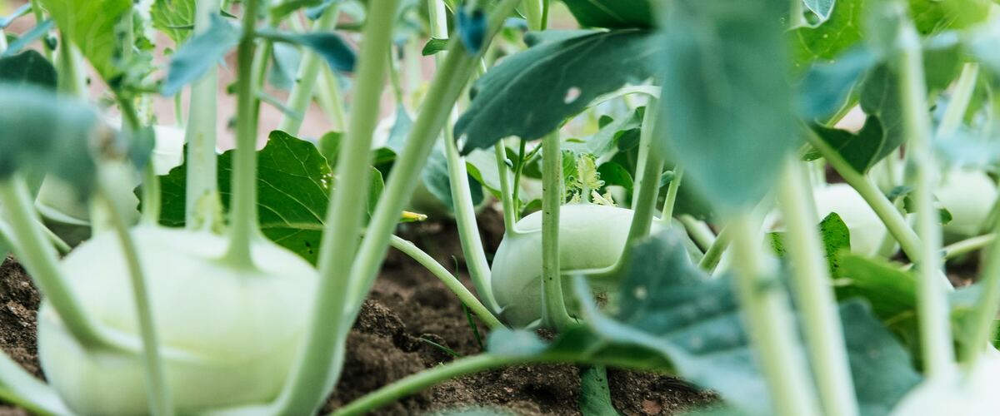

When to plant kohlrabi in Mount Vernon and Burlington, WA
Plant kohlrabi in the garden in Mount Vernon and Burlington Mar 15 – Apr 26, either as seeds or as young plants started indoors Feb 1–15. For a fall harvest, plant again Aug 13–27.
- Difficulty
- Easy
- Sun
- Full sun
- Spacing
- Thin to 6 inches apart
- Planting depth
- ¼ to ½ inch deep
- Frost
- Handles light frost
- First harvest
- About 55 days after planting
Why these dates
Mount Vernon and Burlington's typical last spring frost is March 24. As a cool-season crop that handles light frost, this crop doesn't need to wait for that date. In the west-side valleys, though, the soil usually isn't ready to work until about March 15.
West-side valleys. The Willamette Valley, Puget Sound and southern Oregon valleys. Long frost-free seasons, but soil stays cold and wet into May, so warm crops wait for warm soil, not just the last frost.
How to grow kohlrabi in Mount Vernon and Burlington
- Start seeds indoors Feb 1–15 in trays or small pots under a grow light or in your sunniest window. Or skip this step and buy young plants (starts) at a garden center.
- Harden off the young plants: about a week before planting, set them outside for a few hours a day, a little longer each day.
- Plant them in the garden Mar 15 – Apr 26, Thin to 6 inches apart. If you plant seeds instead, sow them ¼ to ½ inch deep.
- Water deeply once or twice a week rather than a little every day, and mulch once the soil is warm.
- Plant again Aug 13–27 for a fall harvest.
- Harvest: Cut bulbs at 2 to 3 inches across. Peel off the tough skin and eat raw or cooked.
Key numbers
- 45–85°FSoil to sprout
- 6.0–7.5Soil pH
- 2–3 inches acrossHarvest size
- Cabbage wormsBiggest risk
Top care tip: Water steadily and harvest when bulbs are 2 to 3 inches across, before they turn woody.
Growing notes
What makes the difference in Northwest gardens, in plain language.
Soil and steady growth
Kohlrabi is in the cabbage family, and the bulb is actually a swollen stem that sits above the soil. It wants fertile soil with compost, a pH of about 6.0 to 7.5, and steady moisture. Feed lightly at planting. The key to a tender bulb is fast, uninterrupted growth: dry spells or heat make the flesh fibrous. Mulch once plants are up to keep the soil evenly moist.
Timing and why bulbs get woody
Kohlrabi is quick, about two months from seed, and prefers cool weather. Spring crops should go in early, and starts set out too early into a long cold spell may bolt instead of forming a bulb. In the Northwest, fall crops sown in midsummer are especially reliable. Bulbs turn woody when left too long or when grown in hot weather, so pick at tennis-ball size. Kossak is an exception: it's bred to grow large while staying tender, and it stores well. East of the Cascades, get spring crops in early to beat the heat.
Pests, harvest and storage
Cabbage worms chew the leaves; insect netting keeps the white butterflies from laying eggs. Root maggots and flea beetles can also show up, and the same cover helps. Cut the stem just below the bulb when it reaches 2 to 3 inches across. Remove the leaves (young ones are good cooked), peel the tough outer skin, and eat it raw or cooked. Bulbs keep several weeks in a bag in the fridge, and longer for large storage types.
Common questions
When is the last frost in Mount Vernon and Burlington, WA?
Typically March 24. In 9 years out of 10, frost is over by April 14. These are 1991–2020 NOAA climate normals for Mount Vernon.
Is it too late to plant kohlrabi in Mount Vernon and Burlington?
The spring planting window runs through April 26. If you miss it, plant again for fall from August 13 to August 27.
When should I start kohlrabi from seed indoors in Mount Vernon and Burlington?
February 1 to February 15, which is 6 to 4 weeks before the March 15 planting date. Or buy young plants at a garden center instead.
Why is my kohlrabi woody?
It was likely left to grow too big, grown in hot weather, or short on water. Pick at about tennis-ball size and keep the soil evenly moist. Cool-season crops are the most tender.
How do you know when kohlrabi is ready?
When the bulb is 2 to 3 inches across, usually about two months after sowing. Cut it at the base. Don't wait too long, since bigger bulbs toughen quickly.
What part of kohlrabi do you eat?
Mainly the round bulb, which is a swollen stem. Peel off the tough skin and eat it raw like an apple-crisp radish or cooked. The young leaves can be cooked like kale.
Also plant in Mount Vernon and Burlington around the same time
Planting dates for kohlrabi in nearby areas
- Bellingham, WA Mar 15 – Apr 26
- Anacortes, WA Mar 15 – Apr 26
- Oak Harbor and Whidbey Island, WA Mar 15 – Apr 26
- Friday Harbor and the San Juans, WA Mar 15 – Apr 26
- Portland, OR Mar 15 – Apr 26
- Gresham, OR Mar 15 – Apr 26
Full planting calendar for Mount Vernon and Burlington · Kohlrabi in every city